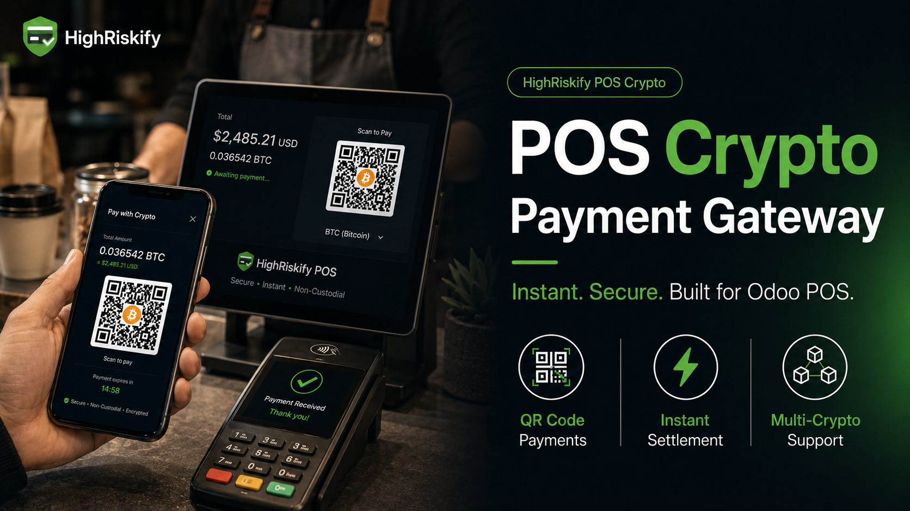
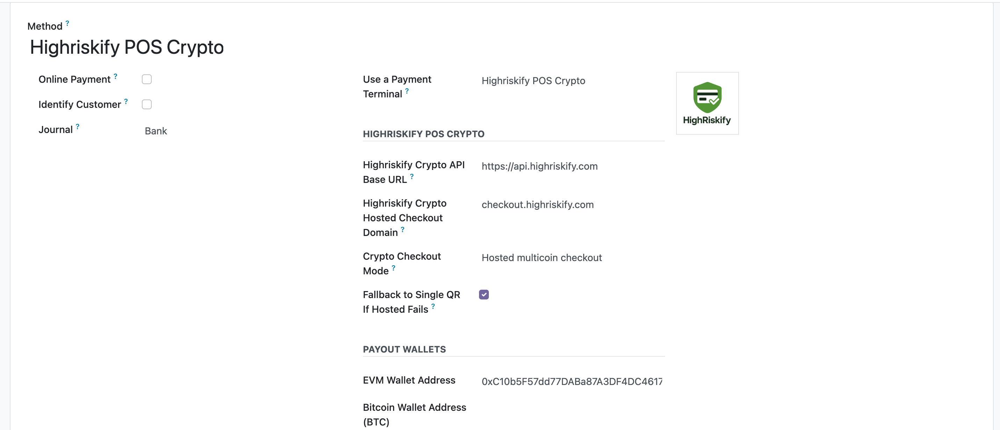

HighRiskify POS Crypto adds cryptocurrency payment support to Odoo Point of Sale. Cashiers can start a hosted crypto checkout or QR-code payment request from the POS payment screen, while Odoo receives payment status updates and synchronizes the payment line after confirmation.
01 POS Crypto CheckoutStart a crypto payment request directly from the Odoo POS payment screen. |
02 QR Code PaymentsDisplay a hosted checkout or QR payment page for the customer to complete payment. |
03 Status SyncSynchronize confirmed crypto payment status back into the POS payment line. |
Odoo POS Payment TerminalAdds HighRiskify POS Crypto as an Odoo POS payment terminal option for retail, store, restaurant, mobile POS, tablet POS, and touchscreen POS workflows. | Hosted Crypto CheckoutCreate hosted crypto checkout sessions or QR payment pages from POS orders using the configured HighRiskify integration service. |
Non-Custodial Wallet ConfigurationConfigure merchant payout wallet addresses for supported networks so crypto can be forwarded according to the configured checkout workflow. | Multi-Chain & Stablecoin SupportSupport for crypto assets and network routes such as BTC, ETH, USDT, USDC, SOL, LTC, DOGE, BCH, ERC-20, BEP-20, TRC-20, Polygon, Arbitrum, Solana, and Avalanche where available. |
Callback ConfirmationProcess confirmed payment callbacks and mark the POS payment line done only after the payment is confirmed. | Backend ConfigurationConfigure API endpoint, checkout domain, payout wallets, checkout mode, fallback QR mode, confirmations, branding, and operational tracking settings. |
1. Configure WalletsInstall the module, open the POS payment method, and add the payout wallet addresses for the desired cryptocurrencies or networks. |
2. Cashier Starts PaymentAt checkout, the cashier selects HighRiskify POS Crypto from the Odoo POS payment screen. |
3. Payment Request OpensThe module opens a hosted checkout page or QR payment request showing the crypto amount, receiving address, and payment instructions. |
4. Customer Sends CryptoThe customer sends the required cryptocurrency amount to the unique payment address or hosted checkout request. |
5. POS Payment Is ConfirmedAfter confirmation, HighRiskify sends a status callback and Odoo marks the POS payment line done. |
Configure HighRiskify POS Crypto settings from Odoo POS payment methods, including service endpoints, hosted checkout domain, payout wallets, QR fallback, confirmation rules, branding fields, and operational tracking settings.

HighRiskify POS Crypto helps merchants accept cryptocurrency payments at checkout while keeping POS payment status synchronized in Odoo. It is designed for retail counters, store checkout, restaurant POS, mobile POS, tablet POS, and self-checkout payment workflows.
This module connects Odoo POS with HighRiskify integration services to support checkout redirection, payment request creation, callback handling, payment status synchronization, and related operational functionality.
During normal module operation, limited POS transaction and order-related information may be exchanged with HighRiskify services so the integration can initiate checkout, receive status updates, assist with transaction tracking, and synchronize the corresponding Odoo POS records.
Data exchanged may include POS order references, transaction amounts, currency, selected payment method, status information, customer email where available, session identifiers, callback notifications, merchant website information, transaction identifiers, wallet/session information, and timestamps.
Merchants are responsible for reviewing, configuring, and using the module according to their own privacy, compliance, and operational requirements. Privacy Policy: https://highriskify.com/privacy-policy
Availability depends on configured wallet addresses, checkout services, regional access, payment method support, token/network support, transaction limits, and provider-side requirements.
Coins & StablecoinsBTC, BCH, LTC, DOGE, ETH, SOL, AVAX, TRX, USDT, USDC, DAI, PYUSD, TUSD, EURC, WBTC, WETH, SHIB, LINK, PEPE and other supported assets. | NetworksBitcoin Network, Ethereum Network, BNB Smart Chain, BEP-20, ERC-20, TRC-20, Solana, Arbitrum, Avalanche, Polygon and other supported blockchain routes. | POS Use CasesOdoo POS crypto payments, Bitcoin POS checkout, USDC POS payments, USDT POS payments, stablecoin POS gateway, mobile POS crypto, QR code payment gateway, retail crypto checkout, restaurant crypto checkout, and POS blockchain payments. |
Install the module, update the Odoo Apps list, open POS payment methods, configure HighRiskify POS Crypto, add the payment method to your POS configuration, then close and reopen the POS session.
For setup help, configuration support, or bug reports, please contact HighRiskify support.